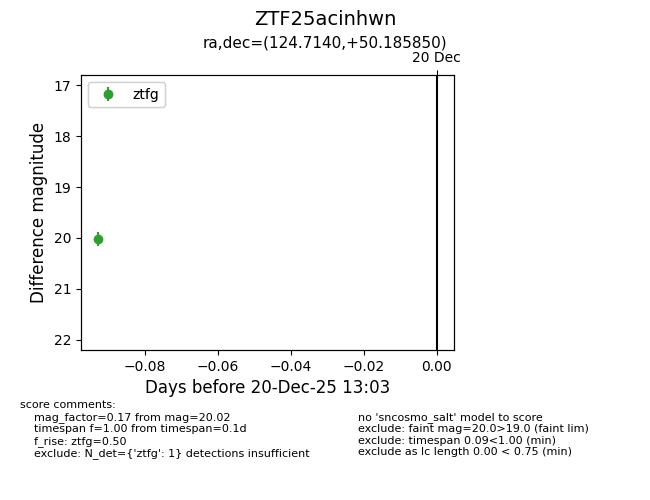
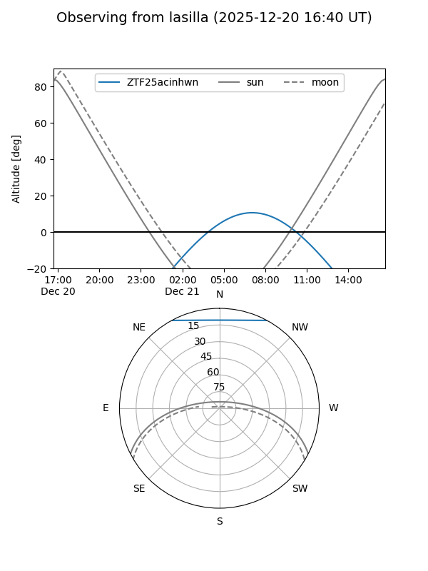
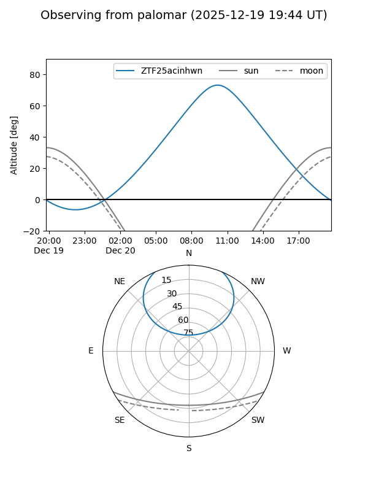

ZTF25acinhwn
Target ZTF25acinhwn at 2025-12-20 13:04
Aliases and brokers:
FINK: fink-portal.org/ZTF25acinhwn
Lasair: lasair-ztf.lsst.ac.uk/objects/ZTF25acinhwn
ALeRCE: alerce.online/object/ZTF25acinhwn
alt names
ZTF25acinhwn (ztf,fink_ztf)
Coordinates:
equatorial (ra, dec) = 124.7140,+50.18585
equatorial (HMS+DMS) = 08:18:51.37,+50:11:09.06
galactic (l, b) = (168.8798,+34.22080)
Flags:
Photometry:
last ztfg=20.02
1 ztfg detections
Lightcurve

Visibility


Additional plots